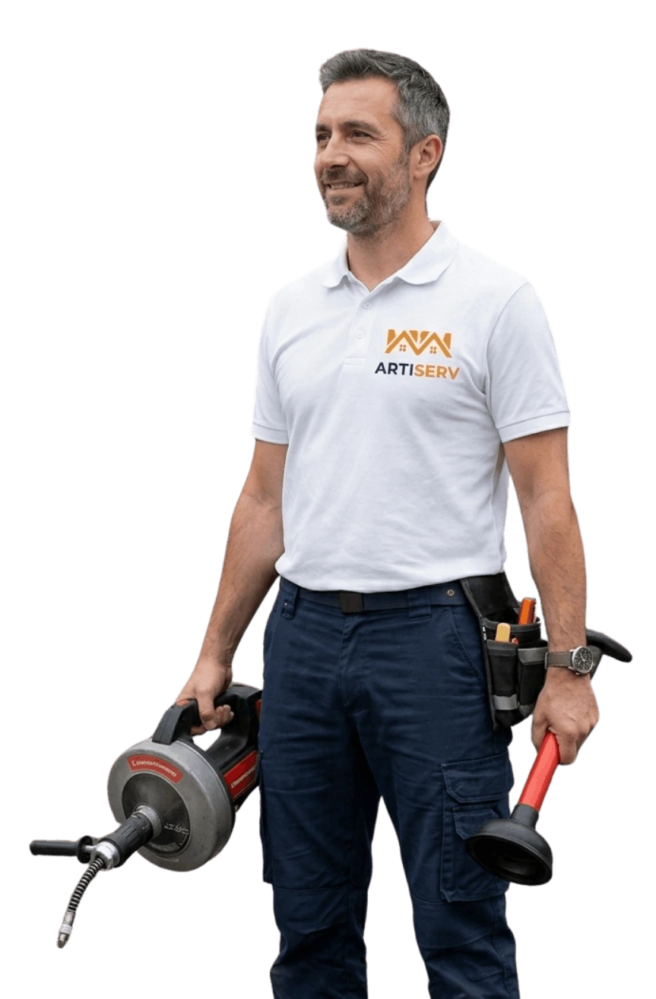

Évier bouché à Vitry-sur-Seine ? Nos techniciens interviennent en moins de 30 minutes, 24h/24 et 7j/7. Graisses, résidus alimentaires, calcaire — bouchon éliminé dès la première intervention, sans casser.

ARTISERV Débouchage est votre spécialiste du débouchage d'évier à Vitry-sur-Seine et dans tout le Val-de-Marne. Graisses solidifiées, résidus alimentaires, dépôts de savon, calcaire ou corps étranger coincé dans le siphon — quelle que soit la cause, nos techniciens identifient l'obstruction et la résorbent efficacement, sans démonter toute votre cuisine.
Un évier bouché paralyse votre cuisine : l'eau stagne, les odeurs remontent, impossible de faire la vaisselle… C'est pourquoi notre délai d'intervention moyen sur Vitry-sur-Seine est de moins de 30 minutes après votre appel, week-end et jours fériés inclus.
Zone d'intervention : Vitry-sur-Seine, Paris, Saint-Denis, Boulogne-Billancourt, Montreuil, Argenteuil et toutes les communes du Val-de-Marne. Intervention d'urgence en moins de 30 minutes.
Huile de friture, graisses de viande, sauces… versées chaudes dans l'évier, elles se solidifient en refroidissant sur les parois du siphon et de la canalisation. En quelques semaines, la couche de graisse rétrécit le passage jusqu'à l'obturation totale.
Épluchures, marc de café, pâtes, riz ou miettes qui s'accumulent dans la bonde forment une masse compacte. Combinés à la graisse, ils créent un bouchon tenace qui résiste aux produits ménagers classiques.
Le savon se mélange au calcaire de l'eau pour former du «savon de chaux», une croûte blanchâtre qui tapisse progressivement l'intérieur du siphon. Dans la région de Vitry-sur-Seine, l'eau calcaire accélère ce phénomène.
Couvercle de bonde, fragment d'éponge, ustensile ou déchet solide coincé dans le coude du siphon : l'obstruction est immédiate. La ventouse est souvent inefficace ; le démontage du siphon ou le furet est nécessaire.
Si l'évacuation est mal inclinée, les matières stagnent et s'accumulent. Si plusieurs éviers ou points d'eau sont bouchés simultanément, c'est la colonne principale qui est en cause — un curage haute pression s'impose.
09 80 80 55 05
Devis gratuit →Pour les bouchons légers à moyens. La pompe à membrane génère une pression pneumatique dans la canalisation, suffisante pour déloger les amas de graisse fraîche ou de résidus alimentaires sans aucune intervention chimique.
Câble flexible motorisé avec tête spéciale dégraissante adaptée aux coudes de cuisine. Pénètre jusqu'à 15 m dans la canalisation. Brise et extrait les bouchons compacts de graisse solidifiée, résidus et corps étrangers coincés.
Jet d'eau à 200 bars avec tête rotative dégraissante pour les obstructions sévères ou récurrentes. Nettoie et décappe les parois en profondeur. La solution définitive contre les bouchons graisseux — voir notre page curage de canalisations.
En cas de bouchons répétitifs ou d'évacuation lente chronique, la caméra endoscopique inspecte la canalisation depuis l'évier jusqu'à la colonne. Rapport vidéo remis, utile pour votre assurance.
Vous décrivez le problème. Nous posons 3 questions clés (ancienneté du bouchon, odeurs, vitesse d'écoulement) pour arriver avec le bon matériel dès le premier passage.
Le technicien arrive à Vitry-sur-Seine avec camionnette équipée : pompe, furet cuisine, mini-hydrocureur dégraissant. Tout le nécessaire embarqué pour traiter les cas les plus courants dès la première visite.
Examen du siphon et test d'écoulement. Devis écrit gratuit avant toute intervention. Aucune surprise sur la facture : le prix annoncé est le prix final.
Technique adaptée à la cause. Vérification de l'écoulement par test de charge (évier plein). Nettoyage de la zone de travail. Conseils personnalisés pour éviter les récidives.
Prix fixes, annoncés avant intervention. Aucun frais de déplacement supplémentaire sur Vitry-sur-Seine et communes limitrophes.
Disponibles 24h/24, 7j/7 — même la nuit, même le dimanche. Un technicien sur Vitry-sur-Seine et le Val-de-Marne.
Appelez maintenantUn évier qui se vide lentement est un bouchon partiel en formation. C'est le meilleur moment pour intervenir : le bouchon n'est pas encore total, l'intervention est plus rapide et moins coûteuse. Quelques signes qui doivent vous alerter :
Appelez le 09 80 80 55 05 — un passage préventif évite le bouchon total et les odeurs persistantes.
Les déboucheurs chimiques vendus en grande surface dissolvent partiellement les graisses fraîches mais présentent plusieurs inconvénients majeurs :
Préférez la ventouse ou l'eau bouillante avec du liquide vaisselle pour les bouchons légers. Pour tout le reste, appelez un professionnel.
Une odeur persistante sans bouchon visible est souvent le signe d'un dépôt graisseux sur les parois du siphon ou d'un siphon à sec. Causes fréquentes :
Un hydrocurage dégraissant et le remplacement du siphon si nécessaire règlent définitivement le problème. Appelez le 09 80 80 55 05 pour un diagnostic.
Quelques gestes simples réduisent considérablement le risque de bouchon :
Oui, nous intervenons sur l'ensemble de l'agglomération de Vitry-sur-Seine et du Val-de-Marne (94).
Nos zones d'intervention pour le débouchage évier incluent notamment : Vitry-sur-Seine, Paris, Saint-Denis, Boulogne-Billancourt, Montreuil, Argenteuil et toutes les communes du département.
Le déplacement est inclus dans le tarif de base pour Vitry-sur-Seine centre et les communes limitrophes. Nous précisons tout frais éventuel avant de nous déplacer.